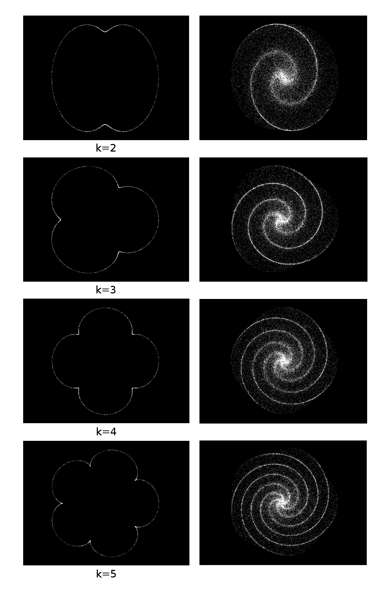
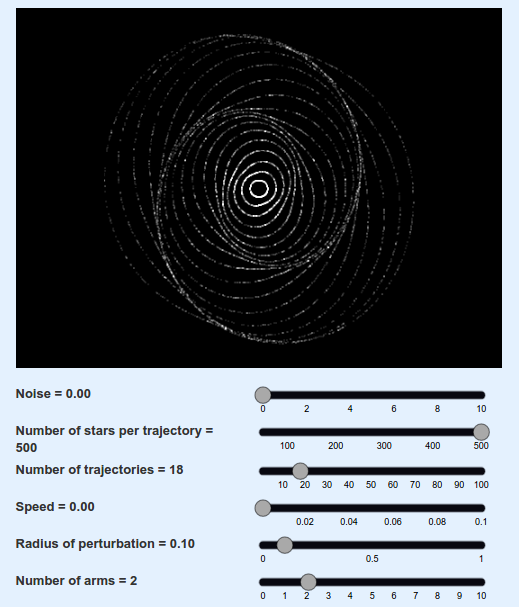
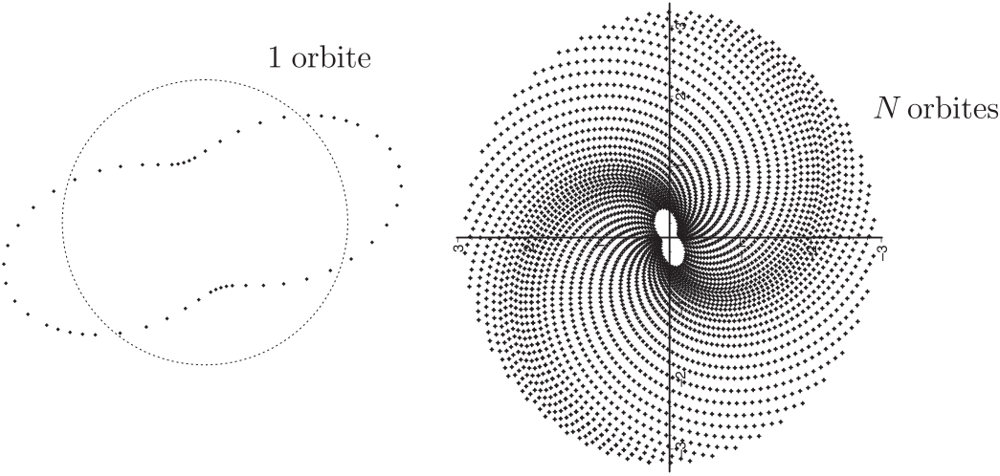

Why do spiral galaxies have spiral arms?
Understand the model used in the simulation to generate spiral arms
Introduction
There are two ways of modelling a galaxy : solving the N-body problem or using a simpler model for the kind of galaxy we try to simulate. The first method consists in simulating gravitational attraction between thousands of stars and seeing the system evolve. The result will be really close to reality, since it uses only the fundamental laws of gravitation (etablished by Newton in the 17th century), without any simplification. However, it demands a huge amount of computational resources to simulate the behaviour of each star taking into account the influence of all other stars. Moreover, it doesn't help us to understand why some patterns, such as spiral arms, appear during the formation of the galaxy. That's why astrophysicists have tried to develop simpler models, that can explain visually the spiral arms pattern that astronomers have been observing in a great amount of galaxies. The more recent and developed one is called density wave model, and that's the one we used in our simulation.
Understanding the model and its parameters
The first step to model a galaxy is to determine the trajectory of stars inside the structure. When we consider only one body in the gravitational field of an other one − for exemple the Earth in the gravitational field of the Sun −, the first law of Kepler tells us that its trajectory will be elliptical. In the case of a galaxy, each star is subject to the gravitation not only of the central black hole, but also of the billions of other stars surrounding it. Thus, the trajectory is a bit more complicated, but we can demonstrate under certain assumptions that it can be modeled by a perturbed circle, often called epicycle (the proof is in annexe).
 Annexe
Trajectories of stars
We admited previously that the trajectory of a star in a spiral galaxy can be modeled by a simple ellipse. However, the real trajectory is a little bit more complicated, since a star is not only influenced by the center, but by all the other stars. Moreover, it doesn't explain why some galaxies have multiple arms. Actually, the real trajectory is a circle perturbated by an oscillation. Here is a way to prove it :
Let's suppose that the gravitational potential $\psi$ of spiral galaxies has the cylindrical symmetry, then \begin{equation} \psi=\psi(R,z)\qquad \text{such that} \qquad \psi(R,z)=\psi(R,-z)\label{symetrie} \end{equation}
The origin of the frame is the center of the galaxy. The position of a test particle of mass $m$ in the potential of the galaxy is given by the vector $\mathbf{r}=R\mathbf{e}_{R}+z\mathbf{e}_{z}$. This particle is only submitted to the mean gravitational force produced by all the other stars in the galaxy. This force is given by the relation $\mathbf{F}=-m\mathbf{\nabla}\psi$, this force is conservative and the lagrangian $\mathcal{L\ }$of the particle is just the difference between its kinetic and potential energies \[ \mathcal{L}=K-U=\frac{1}{2}m\left( \frac{d\mathbf{r}}{dt}\right) ^{2}-m\psi \] a simple calculus gives \[ \frac{d\mathbf{r}}{dt}=\dot{R}\mathbf{e}_{R}+R\dot{\varphi}\mathbf{e} _{\varphi}+\dot{z}\mathbf{e}_{z} \] then the lagrangian writes \[ \mathcal{L=}\frac{1}{2}m\left( \dot{R}^{2}+R^{2}\dot{\varphi}^{2}+\dot{z} ^{2}\right) -m\psi(R,z) \] Lagrange's equations \[ \frac{d}{dt}\left( \frac{\partial \mathcal{L}}{\partial \dot{q}}\right) -\frac{\partial \mathcal{L}}{\partial q}=0 \] has to be written for each generalized coordinates of the test particle namely $q=R,\varphi$ and $z$. They are \begin{equation} \left \{ \begin{array} [c]{l} m\ddot{R}-mR\dot{\varphi}^{2}+m\dfrac{\partial \psi}{\partial R}=0\\ \\ \dfrac{d}{dt}\left( mR^{2}\dot{\varphi}\right) =0\\ \\ m\ddot{z}+m\dfrac{\partial \psi}{\partial z}=0 \end{array} \right. \label{system} \end{equation} These equations are the ones of the motion of the particle (a star...) in a spiral galaxy. The kinetic momentum of this test particle is \[ \mathbf{L}=m\mathbf{r}\wedge \frac{d\mathbf{r}}{dt}=m\left[ -R\dot{\varphi }\mathbf{e}_{R}+\frac{d\left( Rz\right) }{dt}\mathbf{e}_{\varphi}+R^{2} \dot{\varphi}\mathbf{e}_{z}\right] \] as it could be seen in the second equation of the system above, the $z-$component of $\mathbf{L}$, namely \[ L_{z}=\mathbf{L}.\mathbf{e}_{z}=mR^{2}\dot{\varphi}:=mJ_{z} \] is conserved. It is a well known property of systems with this kind of symmetry (Noether's Theorem). Using this constant $J_{z}$, the two other equations of the system can be written \[ \left \{ \begin{array} [c]{lll} \ddot{R} & = & \dfrac{J_{z}^{2}}{R^{3}}-\dfrac{\partial \psi}{\partial R}\\ & & \\ \ddot{z} & = & -\dfrac{\partial \psi}{\partial z} \end{array} \right. \] Using the effective potential \[ \psi_{e}\left( R,z\right) :=\psi \left( R,z\right) +\frac{J_{z}^{2}} {2R^{2}} \] we get \begin{equation} \left \{ \begin{array} [c]{lll} \ddot{R} & = & -\dfrac{\partial \psi_{e}}{\partial R}\\ & & \\ \ddot{z} & = & -\dfrac{\partial \psi_{e}}{\partial z} \end{array} \right. \label{eqmvtpotsym} \end{equation} The equilibrium solutions of this system are easy to obtain :
The equilibrium condition for $z\left( t\right) $ is given by \[ \ddot{z}\equiv0\Rightarrow \dfrac{\partial \psi_{e}}{\partial z}=\dfrac {\partial \psi}{\partial z}\equiv0. \] In the initial hypothesis, the potential $\psi \left( R,z\right)$ is an even function in the $z$ variable: spiral galaxies are symmetric around the plane $z=0$. The partial derivative $\dfrac{\partial \psi}{\partial z}$ is then an odd function. In order to fulfill the equilibrium condition, the motion has to take place in the $z=0$ plane.
The equilibrium condition for $R\left( t\right) $ is given by \[ \ddot{R}\equiv0\Rightarrow \dfrac{\partial \psi_{e}}{\partial R}=\dfrac {J_{z}^{2}}{R^{3}}-\dfrac{\partial \psi}{\partial R}\equiv0. \] This corresponds to a circular motion $z=0$. As a matter of fact, when $R\left( t\right) =R_{o}$ and $\dot{\varphi}\left( t\right) =\dot{\varphi }_{o}$ are two constants, the position vector is always orthoradial and centrifugal : $\mathbf{r}=R_{o}\mathbf{e}_{R}$. The velocity vector is tangential and constant $\mathbf{v}=R_{o}\dot{\varphi}_{o}\mathbf{e}_{\varphi }$. The acceleration is orthoradial and centripetal: $\mathbf{a}=-R_{o} \dot{\varphi}_{o}^{2}\mathbf{e}_{R}$ .$\ $The orthoradial component of the Newton Law then writes \[ -R_{o}\dot{\varphi}_{o}^{2}=-\dfrac{\partial \psi}{\partial R} \] which corresponds to $\ddot{R}\equiv0$.
The equilibrium trajectory of a test particle in the spiral galaxy potential is then a circle of radius $R=R^{\ast}$ in the plane $z=0$. In order to exist, such trajectories have to be stable. We then linearize the system near this circular equilibrium writing the Taylor expansion of the effective potential. Let $\rho \left( t\right) =R\left( t\right) -R^{\ast}$ and $\psi_{e}^{\ast}=\psi_{e}\left( R^{\ast},0\right) =cst$, we have \[ \begin{array} [c]{lll} \psi_{e}\left( R,z\right) & = & \psi_{e}^{\ast}+\rho \left. \frac {\partial \psi_{eff}}{\partial R}\right \vert _{R^{\ast},\text{ }0}+z\left. \frac{\partial \psi_{eff}}{\partial z}\right \vert _{R^{\ast},\text{ }0}\\ & & +\frac{1}{2}\left[ \rho z\left. \frac{\partial^{2}\psi_{eff}}{\partial R\partial z}\right \vert _{R^{\ast},\text{ }0}+\rho^{2}\left. \frac {\partial^{2}\psi_{eff}}{\partial R^{2}}\right \vert _{R^{\ast},\text{ } 0}+z^{2}\left. \frac{\partial^{2}\psi_{eff}}{\partial z^{2}}\right \vert \right] \\ & & +O\left( z\rho^{2}\right) \end{array} \] by definition of the equilibrium $\left. \frac{\partial \psi_{eff}}{\partial R}\right \vert _{R^{\ast},\text{ }0}=\left. \frac{\partial \psi_{eff}}{\partial z}\right \vert _{R^{\ast},\text{ }0}=0$. Owing to symmetry arguments we have $\left. \frac{\partial^{2}\psi_{eff}}{\partial R\partial z}\right \vert _{R^{\ast},\text{ }0}=0$. Hence, we introduce \[ \left( 2\pi \kappa \right) ^{2}=\left. \frac{\partial^{2}\psi_{e}}{\partial R^{2}}\right \vert _{R^{\ast},\text{ }0}\qquad \text{and} \qquad \left( 2\pi \omega \right) ^{2}=\left. \frac{\partial^{2}\psi_{e}}{\partial z^{2} }\right \vert _{R^{\ast},\text{ }0} \] named respectively the epicycle ($\kappa$) and vertical ($\omega$) frequency. The epicycle frequency has an interesting property in the special case of spiral galaxies : the effective potential $\psi_{e}\left( R,z\right) \ $is the sum of a concave, i.e. $\psi \left( R,z\right) ,$ and convex, i.e. $\frac{J_{z}^{2}}{2R^{2}},$ function. When this sum is twice $R-$derived the net result produces a constant and positive function $\kappa $ under a large interval of values of $R^{\ast}$. Another simple analysis shows that when $z=0,$ the vertical frequency $\omega$ is positive and constant. For a typical spiral galaxy we then have \[ \psi_{e}\left( R,z\right) =\psi_{e}^{\ast}+\frac{1}{2}\left( 2\pi \kappa \right) ^{2}\left( R-R^{\ast}\right) ^{2}+\frac{1}{2}\left( 2\pi \omega \right) ^{2}z^{2}+o\left( 2\right) \] Near the circular equilibrium, the motion equations for a star then writes \[ \left \{ \begin{array} [c]{lll} \ddot{R} & = & -\left( 2\pi \kappa \right) ^{2}\left( R-R^{\ast}\right) \\ & & \\ \ddot{z} & = & -\left( 2\pi \omega \right) ^{2}z \end{array} \right. \] whose solutions are \begin{equation} \left \{ \begin{array} [c]{lll} \rho & = & \Upsilon \cos \left( 2\pi \kappa t+\alpha \right) \\ & & \\ z & = & Z\cos \left( 2\pi \omega t+\beta \right) \end{array} \right. \label{solquasi} \end{equation} The amplitudes $\Upsilon$ and $Z$ of these oscillations are small to keep coherence with the linear hypothesis we do : typically we need $\left \vert \Upsilon \right \vert \ll R^{\ast}$. By opposition the two phases $\alpha$ and $\beta$ are free parameters : they could be used to put several stars around the same circular orbit. Values of $\kappa$ and $\omega$ come from the galactic potential, a large amount of data tell us that $\ \kappa \simeq2$. This special value of the epicycle frequency confers to the perturbed orbit a special form which look like to an ellipse. The great axis of this false ellipse could be $a=R^{\ast}+\Upsilon$ and the short axis $b=R^{\ast} -\Upsilon$. The eccentricity of this ellipse should be $e=\sqrt{1-\left( \frac{b}{a}\right) ^{2}\text{ }}$. When $\varepsilon=\frac{\left \vert \Upsilon \right \vert }{R^{\ast}}\ll1$ it becomes $e\simeq2\sqrt{\varepsilon}$. Several stars can be along this false ellipse associated to a given $R^{\ast}$ as it is plotted on the left panel of the figure below:
To obtain a whole galaxy we have to consider all values of $R^{\ast}$ in the range $\left[ 0,R_{g}\right] $ where $R_{g}$ is the radius of the galaxy (the half of its largest dimension...). For instance, we can discretize this interval in $n$ values distributed with a given law. If all these false ellipses are aligned nothing appears... But when a constant small angle $\iota$ shift these ellipses each over, a splendid spiral grows from the center to the outwards of the galaxy. It is sketched in the right panel of the figure above.